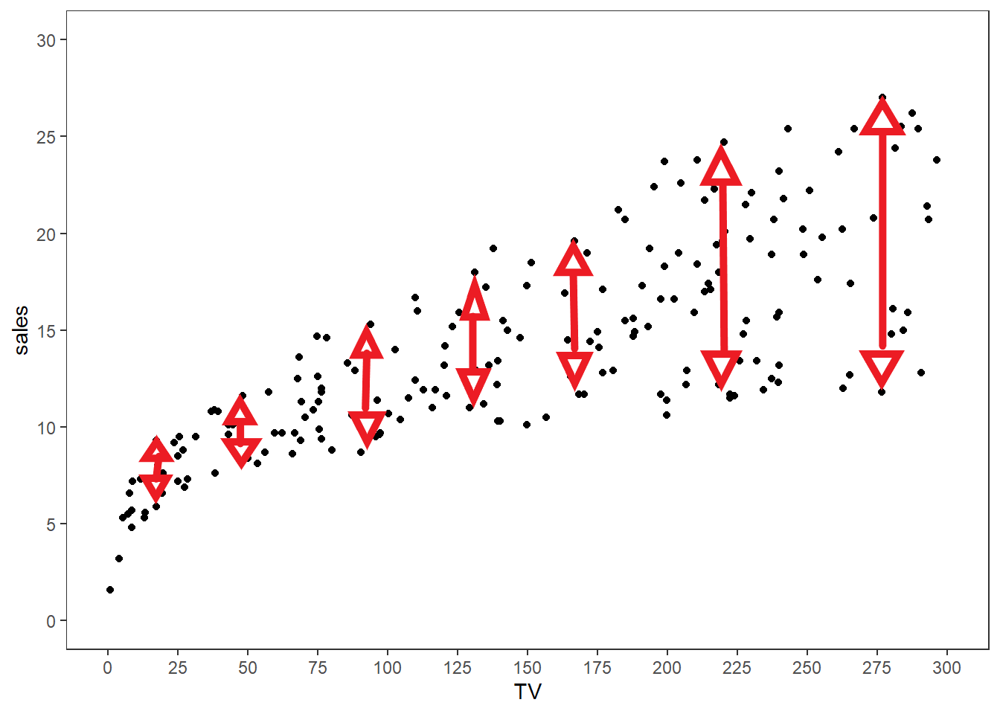

Simulating the Setting
As mentioned in the previous post, we assume
\[Y_i = \beta_0 + \beta_1X_i + \epsilon_i = \text{intercept } + \text{slope }\cdot X_i + \unicode{x201C}\text{noise/error}\unicode{x201D}\]
with \(\mathbb{E}[\epsilon_i \mid X_i] = 0\). Notice it follows immediately by double expectation that \(\mathbb{E}[\epsilon_i] = 0\). Here is an example of such data. For convenience, we assume that the \(\epsilon_i\) are normally distributed with mean \(0\) and variance \(1\) in our simulation.
library(ggplot2)
set.seed(45)
# generate a data frame of n x-y pairs based on
# the linearity + noise assumption
generate_df <- function(n, beta_0, beta_1,
error_function, ...) {
# Generate random x values between 0 and 20
x <- runif(n = n, min = 0, max = 20)
# Compute y_i
y <- beta_0 + beta_1 * x + error_function(n = n, ...)
# Create data frame
return(data.frame(x = x, y = y))
}
# Set beta_0 to 0.5, beta_1 to 1
beta_0 <- 0.5
beta_1 <- 1
df <- generate_df(n = 200,
beta_0 = beta_0,
beta_1 = beta_1,
error_function = rnorm,
mean = 0,
sd = 1)
# Define function for the true process, without the error term
f <- function(x, beta_0, beta_1) {
return(beta_0 + beta_1 * x)
}
# Plot the graph
ggplot(df, aes(x = x, y = y)) +
geom_point() + # dots
# the true process without the noise
stat_function(fun = f,
args = list(beta_0 = beta_0, beta_1 = beta_1),
color = "forestgreen",
size = 2) +
# black-and-white theme
theme_bw() +
# blank panel grid
theme(panel.grid = element_blank())

What the visualization is portraying above is that the true \(Y_i\) values are a linear equation (in green) plus some “noise” whose mean is \(0\).
Application to Actual Data
We work with the Advertising.csv file from the second edition of An Introduction to Statistical Learning:
df <- read.csv("https://www.statlearning.com/s/Advertising.csv",
row.names = 1) # row 1 contains the row labels
head(df) # show first six rows
## TV radio newspaper sales
## 1 230.1 37.8 69.2 22.1
## 2 44.5 39.3 45.1 10.4
## 3 17.2 45.9 69.3 9.3
## 4 151.5 41.3 58.5 18.5
## 5 180.8 10.8 58.4 12.9
## 6 8.7 48.9 75.0 7.2
These data consist of \(n = 200\) observations with \(p = 4\) columns:
sales in thousands of units for a particular product, as well asTV, radio, and newspaper advertising budgets in thousands of dollars.
Suppose we treat \(Y_i\) as sales and \(X_i\) as TV. Let’s plot these data and see how they look:
# Plot the graph
ggplot(df, aes(x = TV, y = sales)) +
geom_point() + # dots
# black-and-white theme
theme_bw() +
# blank panel grid
theme(panel.grid = element_blank()) +
# x-scale: from 0 to 300, ticks every 25
scale_x_continuous(limits = c(0, 300),
breaks = seq(0, 300, 25)) +
# y-scale: from 0 to 30, ticks every 5
scale_y_continuous(limits = c(0, 30),
breaks = seq(0, 30, 5))

For simple linear regression, we would then assume that for each observation \(i = 1, \dots, 200\) that the following relationship holds for some intercept \(\beta_0\), slope term \(\beta_1\), and noise term \(\epsilon_i\) (with \(\mathbb{E}[\epsilon_i \mid \text{TV}_i] = 0\)) for each observation:
\[\begin{equation*}
\text{Sales}_i = \beta_0 + \beta_1 \cdot \text{TV}_i + \epsilon_i\text{.}
\end{equation*}\]
Is this assumption true?
The reality is that, unless we are in control of how the data are generated and know that the data may be specified by the process above, we cannot guarantee that the
\[\begin{equation*}
\text{Sales}_i = \beta_0 + \beta_1 \cdot \text{TV}_i + \epsilon_i
\end{equation*}\]
assumption is true. That is, given a bunch of TV values, unless we know for a fact that Sales were based on the form given above (like in our simulation we did earlier in this post), we cannot guarantee this assumption holds.
So the question of “is this assumption true?” turns into
Is this assumption good enough?
This question is a much more difficult question to answer than the prior one, and is often ignored.
Two things I do not suggest for answering this question, though, include:
- Hypothesis testing for distributional fit or finding evidence of the coefficient \(\beta_1\) being not equal to \(0\) (such as through a \(t\)-test): such procedures encourage binary, “strict-cutoff”-type thinking which may give misleading results. Additionally, such hypothesis tests assume that the \(\text{Sales}_i = \beta_0 + \beta_1 \cdot \text{TV}_i + \epsilon_i\) assumption is true to begin with.
- Relying solely on graphical procedures to test these assumptions: there are many arbitrary decisions that go into making a graph that could influence how you view the data (e.g., the axes bounds, ticks, etc.).
The question of interest matters a lot than many textbooks suggest. If someone poses to me a question similar to “how does TV advertising budget influence sales?” I would be inclined to assume the model \(\text{Sales}_i = \beta_0 + \beta_1 \cdot \text{TV}_i + \epsilon_i\) just to get a “good-enough” result to start with, and if necessary, I can make it more complex from there. In such cases, one prioritizes intepretability over precision.
Questions that are more detailed than “how does TV advertising budget influence sales?” - particularly if there is interest in a sales prediction involved given a TV budget - may require more sophisticated tools than linear regression, such as local regression, with some cross validation thrown in. However, as one increases the level of sophistication of statistical tools, there is usually more of a problem of intepretability to general audiences. Back when I taught introductory data science, I referred to this phenomena as the explainability vs. complexity tradeoff.
For the purposes of this post, we will assume that the model \(\text{Sales}_i = \beta_0 + \beta_1 \cdot \text{TV}_i + \epsilon_i\) holds with \(\mathbb{E}[\epsilon_i \mid \text{TV}_i] = 0\).
Executing the regression procedure, and interpretation
If we assume \(\text{Sales}_i = \beta_0 + \beta_1 \cdot \text{TV}_i + \epsilon_i\) holds with \(\mathbb{E}[\epsilon_i \mid \text{TV}_i] = 0\), by the Gauss-Markov theorem, the least-squares estimators of \(\beta_0\) and \(\beta_1\) are their corresponding “best” estimators. In R, these may be calculated using the lm (linear model) function:
# execute the least-squares procedure
model <- lm(sales ~ TV, data = df)
# return summary stats
summary(model)
##
## Call:
## lm(formula = sales ~ TV, data = df)
##
## Residuals:
## Min 1Q Median 3Q Max
## -8.3860 -1.9545 -0.1913 2.0671 7.2124
##
## Coefficients:
## Estimate Std. Error t value Pr(>|t|)
## (Intercept) 7.032594 0.457843 15.36 <2e-16 ***
## TV 0.047537 0.002691 17.67 <2e-16 ***
## ---
## Signif. codes: 0 '***' 0.001 '**' 0.01 '*' 0.05 '.' 0.1 ' ' 1
##
## Residual standard error: 3.259 on 198 degrees of freedom
## Multiple R-squared: 0.6119, Adjusted R-squared: 0.6099
## F-statistic: 312.1 on 1 and 198 DF, p-value: < 2.2e-16
The least squares estimators of \(\beta_0\) and \(\beta_1\) are \(\hat{\beta}_0 = 7.032594\) and \(\hat{\beta}_1 = 0.047537\) respectively. These may be interpreted as follows:
- A product with zero (thousands of) dollars of TV advertising budget sells roughly 7,033 (\(1000 \cdot \hat{\beta}_0\)) units of the product. This interpretation is based on the value of \(\beta_0\), and recalling that both \(\text{TV}_i\) and \(\text{Sales}_i\) are measured in thousands.
- Adding one thousand dollars to the TV advertising budget for a product is associated with a $47.54 (\(1000 \cdot \hat{\beta}_1\)) increase in sales.
It is important to note that these interpretations rely on all of the following assumptions holding:
- \(\text{Sales}_i = \beta_0 + \beta_1 \cdot \text{TV}_i + \epsilon_i\), and
- \(\mathbb{E}[\epsilon_i \mid \text{TV}_i] = 0\).
The first assumption above is especially important, in that no other variables other than \(\text{TV}_i\) are included in the determination of \(\text{Sales}_i\).
Some other mathematical concerns
As mentioned in the prior linear regression theory post, if we wish to calculate the variance of the least-squares estimators of \(\beta_0\) and \(\beta_1\), we must also assume that \(\text{Var}[\text{Sales}_i \mid \text{TV}_i] = \sigma^2\). This condition is also known as homoskedasticity. In simple terms, homoskedasticity assumes that the variability of the \(\text{Sales}_i\) is constant regardless of the value of \(\text{TV}_i\) we have. When this condition does not hold, the model is said to exhibit heteroskedasticity, which is given emphasis in econometrics more often than statistics. I haven’t had much of a chance to dive into this world, but may cover this material in a future post.
From a naive visual inspection, one should observe that the \(\text{Sales}_i\) values seem to be more spread out as the \(\text{TV}_i\) values increase, which would suggest that we have heteroskedasticity. The variability of \(\text{Sales}_i\) values seems to increase as \(\text{TV}_i\) increases, roughly approximated by the red lines and arrows below.

If we desire, we could assume the model \(\text{Sales}_i = \beta_0 + \beta_1 \cdot \text{TV}_i + \epsilon_i\) holds with the variance of \(\epsilon_i\) being proportional to \(X_i\); i.e., \(\text{Var}[\epsilon_i \mid \text{TV}_i] = \sigma^2 \cdot \text{TV}_i\). This is a more complicated version of simple linear regression than we’ve discussed so far, known as the Aitken Model or Generalized Least Squares. I may write a post on this topic in the future.